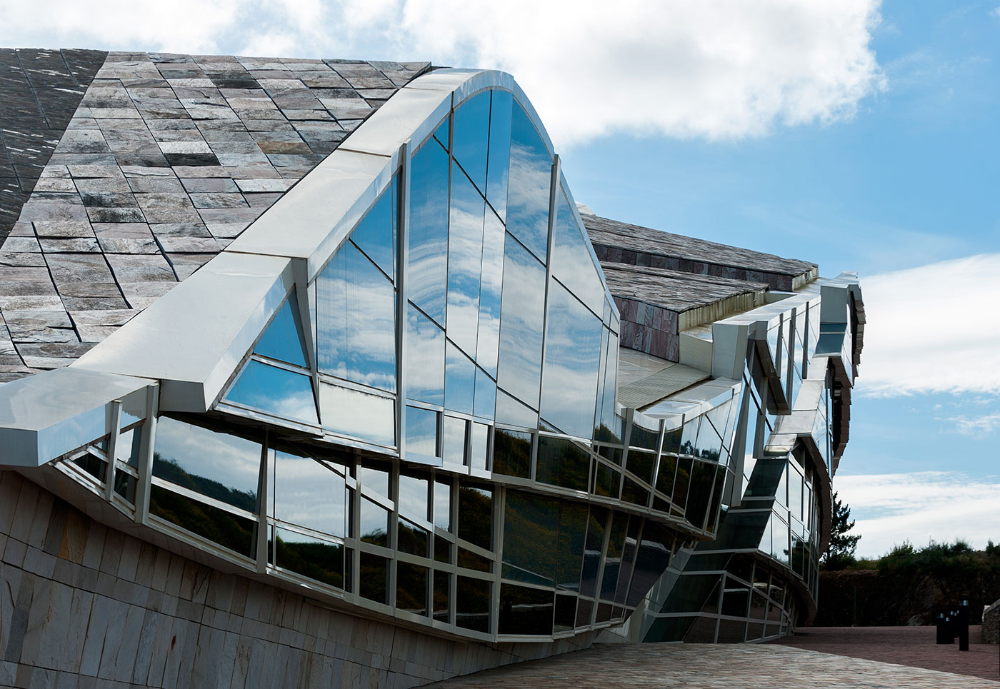
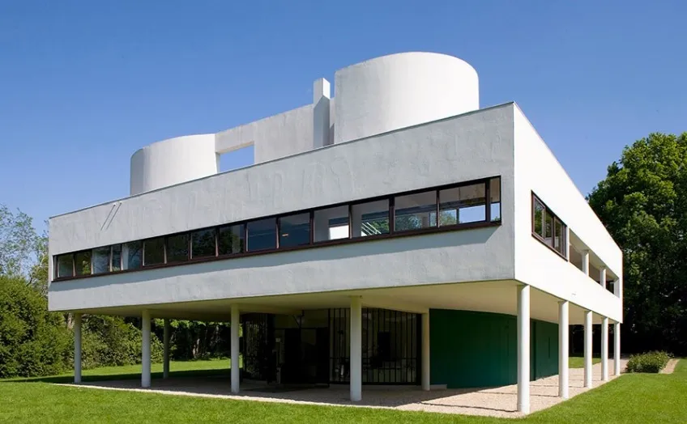
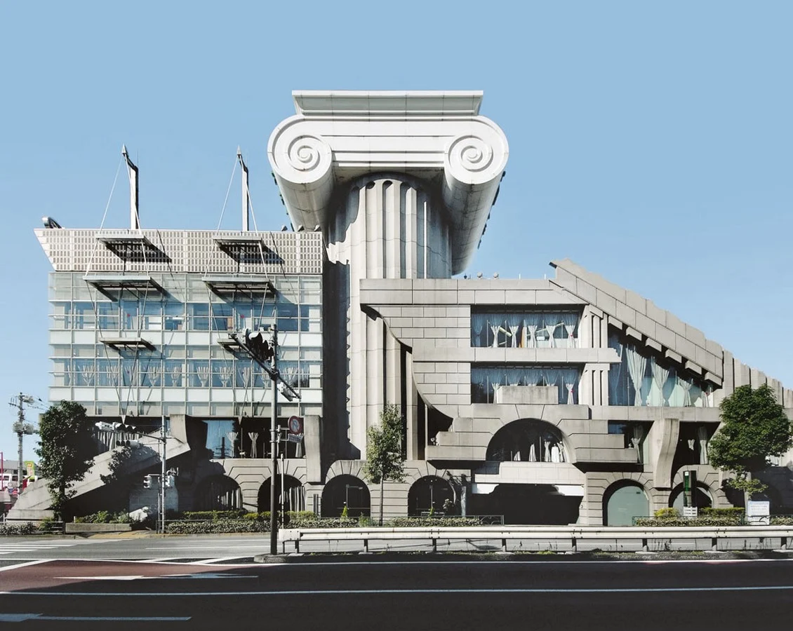
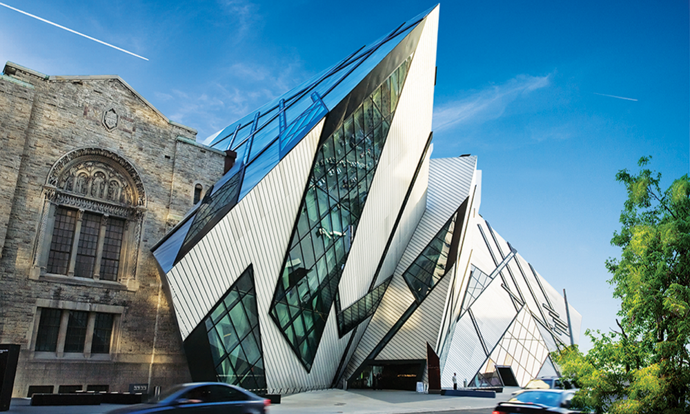
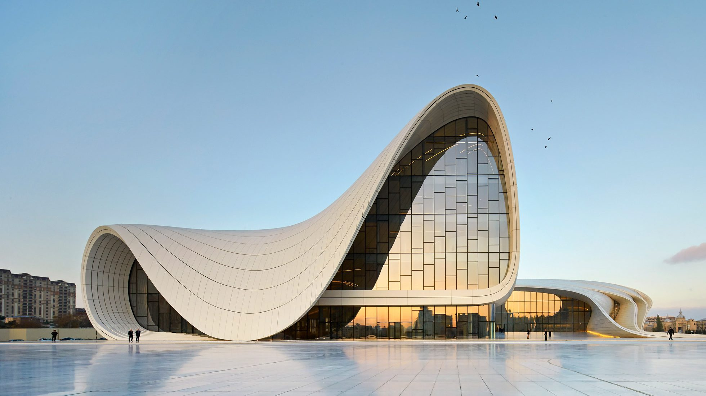
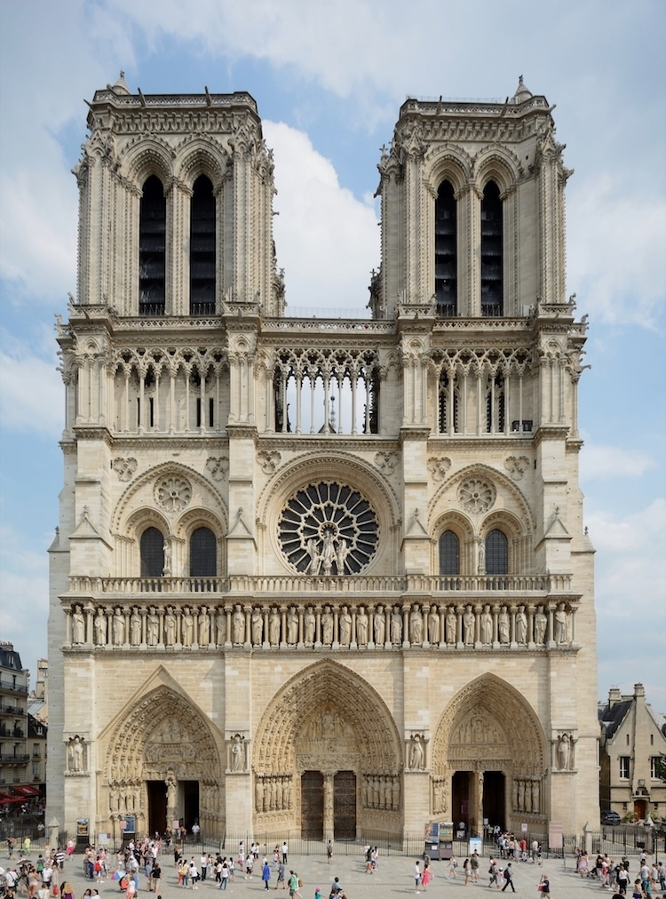

"The purpose of architecture is not to shelter and comfort, but to create an idea." This is a rather disorienting quote I came across while completing an assigned reading by Peter Eisenman. Eisenman is a known post-structuralist architect who holds the following beliefs: that there is no objective meaning, that human-centered design should be rejected, that structures should destabilize rather than comfort, that traditional or regional architecture is obsolete, and that there is no God or transcendent influence to be found in design. I came to class upset that day, wondering why we were being assigned such a nihilistic and anti-theistic philosophy of design. Apparently, so were a large portion of my peers, and a discussion ensued — many students, including some who would normally never speak up in class, found themselves arguing against Eisenman's claims. The most common objections were that his architecture strips design of any human element, that it carries no real meaning, and that it is simply ugly and unlivable. I was pleasantly surprised that my studio mates united so strongly against this philosophy, and for a moment I had hope that the class was moving toward an appreciation of transcendent design. The professors seemed to be in some reserved agreement, but withheld from voicing their own opinions on the matter.

As the conversation died down, I expected some closing remark from the professor explaining that we'd been exposed to this worldview so that we could learn to articulate its fallacies and better argue against it in the future. I was sadly mistaken. The projector turned on, and a slideshow for the next project began: a parametric design exercise in which we picked a random shape, applied three random operations to it — "extrude" or "shift," for example — and stacked the results into another random shape. It was an exercise directly inspired by Eisenman's own teachings. I sat there in disbelief at what I was seeing, and what shocked me further was that hardly any of my classmates seemed to notice the contradiction between what we had just argued against and what we were now being asked to do. But it became apparent that it wasn't the student's fault, for it was an uphill battle against the curriculum that we were poorly equipped to fight. I could give several additional examples of the program's overt push toward contemporary design — the majority of our studied precedents being modern, parametric design serving as the foundation of our design philosophy, and nearly all of the school's feeder firms being contemporary practices. But I think the point is clear, and all I was left with was one question: why are we being taught this?
History of Anti-Foundationalist Architecture
To understand why this is being taught, a brief overview of the history of anti-foundationalist architecture, beginning with modernism, is required. In the aftermath of the Enlightenment, an increasingly negative sentiment toward the traditional Christian Church took hold among many Europeans and Americans. It gave rise to a nineteenth-century movement often called disenchantment, which aimed to strip nature and human life of meaning, purpose, and sacred order in favor of an atheistic, materialist explanation of the world. The nineteenth-century philosopher Friedrich Nietzsche recognized this shift and wrote that "God is dead" — not a literal claim about his own belief, but a diagnosis that the West had lost its Christian foundation as the center of society, and would need to build new values from the nothingness of materialism. His prediction came to pass: in the early twentieth century, European intellectuals began forming an architectural language born from this new, godless machine age, holding that form no longer needed to answer to any inherited cosmic or religious order. Walter Gropius's Bauhaus school, along with the parallel functionalist philosophy of Le Corbusier, became the center of this controversial modernist movement — and despite the controversy, both found their influence steadily growing. This rejection of the inherited transcendent order wasn't confined to the modern style alone — it would be inherited and radicalized by postmodernism's pastiche and ironic plurality of form, deconstructivism's active destabilization of meaning and order, and parametricism's algorithmic self-generation of form. For this reason, this essay uses the repeated term "anti-foundationalism" to group this whole family under one philosophical umbrella.
Prior to the 1930s, American architectural education was modeled after the École des Beaux-Arts in Paris, which trained students in historical precedent, classical orders, and hand-drawing technique. Schools like Penn, Columbia, MIT, and Cornell followed suit, instilling principles of proportion, ornament, symmetry, and typology throughout their programs. World War II then dealt classicism a second blow. Hitler's Nazi Germany had already weaponized classical and monumental architecture for authoritarian propaganda — and in the same period, the regime's hostility toward modernism as "un-German" drove the Bauhaus's own leaders out of the country and into America. These men, chief among them Walter Gropius and Mies van der Rohe, became highly influential figures at universities like Harvard and IIT, and used the postwar association of classicism with totalitarian regimes to restructure curricula, hiring, and juries so that Beaux-Arts training was actively phased out. At the same time, the postwar building boom in America and the reconstruction effort in Europe turned to modernism to get buildings constructed as cheaply and quickly as possible, which made traditional classicism seem expensive and outdated by comparison.
It is from this point that we see the overwhelming consolidation of modernism in university architecture programs. The students trained under these early Bauhaus émigrés went on to become the architects who staffed accrediting bodies, faculty hiring committees, and the profession's major journals — creating a self-reinforcing loop in which NAAB accreditation and the critical/journalistic establishment came to reward formal innovation over historical fluency. These same institutions went on to absorb the philosophies of postmodernism and deconstructivism in the following decades. From the 1990s onward, the rise of CAD and digital design tools reinforced this further, pushing curricula toward parametricism — another paradigm with no natural home for hand-drawn classical orders. The result is a built environment now defined by functionalist architecture, where curtain walls, floor-to-ceiling glass, and flat roofs have become the standard visual experience of people around the globe.
Anti-Foundationalist Architecture's Compatibility with Christian Worldview
In its accreditation report, California Baptist University states in its mission statement: "The CBU Architecture Program is centered on a multi-faceted and holistic understanding of design rooted in biblical theology, Christian ethics, and missional/practical application." I affirm these listed commitments, but it seems the majority of them have been diluted by the contemporary architectural curriculum that CBU has adopted. Critical examination of the underpinnings of this anti-foundationalist design philosophy is needed in order to understand whether the school can effectively enact biblical theology, Christian ethics, and missional/practical application alongside it.
I. Biblical Theology
Within Christian classical thought, Thomas Aquinas's writings have great relevance to the philosophy behind design rooted in biblical theology. In his writings Summa Theologiae and De Veritate, he states that everything that exists has certain properties called the transcendentals: Unum (unity/oneness), meaning every being is undivided in itself; Verum (truth), meaning every being is intelligible, knowable, and conformed to intellect; Bonum (goodness), meaning every being is desirable and has a completion or perfection toward which it tends; and Pulchrum (beauty), later systematized by Thomist scholars as the pleasure taken in apprehending a thing, often treated as a kind of union of the other three transcendentals.
The last transcendental — beauty — is often grouped with goodness, but there is an important distinction to be made. Goodness is what a thing is for, and is what we desire or seek to possess, whereas beauty is the pleasure taken simply in perceiving or apprehending a thing. So to understand whether a building is beautiful, one can ask three questions that stem from Aquinas's conditions for beauty. First, does it achieve Integritas — meaning, does the building read as one coherent thing, or as a fragmented assemblage of parts that don't cohere into a whole? Second, does it accomplish Consonantia — do the building's parts relate to each other, and to the human body, in ordered, legible ratios, or is disproportion and dissonance a deliberate design value? Third, does it achieve Claritas — does the building's form clearly disclose its own structure and nature to perception, or does it obscure, defamiliarize, or actively resist being read?
Aquinas's writings will help to weigh whether the four primary anti-foundationalist architectural movements — modernism, postmodernism, deconstructivism, and parametricism — meet any of these three conditions for beauty.

The first movement is modernism. Integritas is achieved through its unity of reduction, functioning as a single, coherent, machine-like system in which every part serves the whole. This is seen in cases like the Seagram Building or the Unité d'Habitation. But this unity is attained by stripping away beauty and ornamentation rather than by richness of design — achieving a lifeless wholeness. Consonantia: to his credit, Le Corbusier made a serious effort to integrate the golden ratio and human bodily proportion into his designs through his Modulor system. Similarly, Mies van der Rohe used a grid-based proportion system that was strictly rational. These scale systems did achieve consonantia, but framed it from an anthropocentric center — believing that man is the terminus of measurement rather than a mirror of a transcendent, cosmic order. Claritas: modernism does disclose its structure clearly, through an honesty of materials such as the steel frame or the glass wall. But this clarity extends only to the legibility of construction. Claritas, properly understood, discloses symbolic and transcendent meaning beyond mere function — and for a style that prides itself on being simply functionalist, it fails to possess any transcendent, metaphysical claritas at all.

The second movement is postmodernism. Integritas is postmodernism's clearest violation, for it seeks to deliberately quote multiple historical styles within a single building in a manner that is pastiche and ironic. In Venturi's Complexity and Contradiction in Architecture, this nears a direct rejection of integritas as a value, promoting disunity as the foundation of design. Consonantia is likewise entirely absent from postmodern philosophy, for proportion and scale are intentionally jarring, and classical elements that stem from transcendental, cosmic proportions are desecrated by being deployed at the wrong scale to grab attention or appeal to a humorous audience. Claritas has a stronger case in postmodernism than in modernism, for postmodernism does try to communicate a meaning. But once again that meaning is unstable and ironic. Claritas is the radiance of true form; it demands an authentic meaning. Postmodernism instead tells its meaning as a joke — one that targets any objective definition of beauty, and, by extension, the transcendentals themselves as objective values.

The third movement is deconstructivism. Integritas is entirely absent from designs by the likes of Peter Eisenman and other disciples of this philosophy. The buildings they design rely on colliding geometries, fragmented forms, and structures that read as exploded or unstable. Coherence and comfort are resisted at all costs, with incoherence itself treated as an achievement rather than a flaw. Consonantia is explicitly violated in deconstructivism, for while modernism used a materialist proportion system, and postmodernism skewed it for comedic effect, deconstructivism embodies disproportion and dissonance as core design values. It relies on arbitrary operations, randomized shapes, and colliding scales to generate form. This makes the project I had to complete at CBU, mentioned at the beginning of this essay, direct evidence that consonantia is institutionally taught as something to avoid. Claritas is likewise overtly rejected, for Tschumi and Eisenman use "defamiliarization" approvingly to describe their own work. The movement's own leaders state this rejection as their primary goal, which leaves little more to argue.

The final and most recent movement is parametricism. Integritas here is nuanced — for these forms are often highly unified under a single algorithmic logic generated in computer software. This does create coherence in material and geometry, but it is ultimately a unity governed by an algorithm, one that lacks the perceptually meaningful wholeness a human would readily find beautiful. Consonantia is claimed by this movement through the proportional relationships between parametric parts, which aim at structural efficiency and algorithmic precision. This digital proportion system lacks any relation to the human body or to a theologically ordered cosmos, for both are removed entirely in order to make way for the algorithm's own logic. Claritas is lacking in most of these forms, for the buildings often appear as fluid surfaces that vary and obscure their actual shape. Novelty becomes king in form, encouraged by Schumacher in his 2008 Parametricist Manifesto, with instructions such as: avoid familiar typologies, avoid platonic or hermetic objects, and avoid clear-cut zones and boundaries. Any transcendent truth or beauty is rejected in favor of a search for originality, in techniques that carry no grounding at all.

In contrast to these four anti-foundationalist movements stands the Gothic tradition, offering a positive model against which each transcendental can be measured. Gothic architecture achieves a clear unity in its pursuit of divine encounter through elements like verticality, light, and ornament. Every part of the structure — ribbed vaults, flying buttresses, pier clusters, tracery, portal sculpture — must subordinate to, and contribute to, the larger whole's vision. Chartres Cathedral is a strong example of this: despite two centuries of construction, multiple master builders, and stylistic shifts from Early to High Gothic, the building reads as a single coherent whole because every addition submitted to the same governing structural and theological logic. Consonantia: the master builders behind Gothic cathedrals believed that mathematical proportion was reflective of divine cosmic order, making their designs achieve a kind of geometrical transcendence. They carried this out through ad quadratum and ad triangulum geometric systems, in which the whole building's dimensions were drawn from a single root geometric figure — a square or equilateral triangle — repeated at different scales throughout the plan, elevation, and even window tracery. This left no design decision up to personal preference or taste; door heights, window geometries, nave elevations, and every other detail submitted to this system. Claritas: the structure itself is highly legible — flying buttresses show lateral thrust being carried, ribbed vaults show overhead weight being distributed, and piers transfer the weight of the roof into the ground. In this respect, nothing is hidden, and every structural element serves a purpose. But here is where Gothic architecture does something modernism never could: it introduces colored light as a transcendent medium, guiding the viewer toward the divine. Light is not structurally necessary, but instead added for a transcendent purpose, shifting claritas beyond merely how the building is made to what it is for.
After surveying these five architectural movements, one may reasonably ask: why should a Christian design philosophy value excess beyond necessity as a matter of theological principle, rather than mere personal taste? The answer is found by looking to creation itself, which is full of beauty that exceeds strict functional necessity — a peacock's tail is wildly disproportionate to the mating function it serves; a flower's form vastly exceeds what pollination alone would require. The Creator is gratuitous in all of His creation. Genesis 1:27 tells us that humans are made in God's image, creating in us both a responsibility and a desire to participate in the creation of beautiful things — not merely to solve functional problems. Adolf Loos's essay "Ornament and Crime," often distilled into the maxim that ornament is crime — the claim that non-necessary beauty has no place in architecture — stands, then, as a direct rejection of the gratuitous pattern of creation. This is why the contrast with Gothic architecture is so effective: the master builders who dedicated their lives to these cathedrals worked as image bearers of God, creating structures that went beyond what was required, in order to participate in God's beautiful created order.
II. Christian Ethics
The preceding section demonstrated that contemporary design stands in opposition to biblical theology. But does it also treat the material world, human labor, and communal inheritance within the bounds of Christian ethics? Genesis 1:28 and 2:15 tell us that humans were placed in the garden "to work it and keep it" — a command repeated throughout scripture, calling humanity to good stewardship of the world we have been given. It is logical to deduce that this applies to architecture and the built environment as well, but contemporary design tells another story. Looking at material choices and construction techniques since the onset of modernism, anti-foundationalist design has produced a well-documented environmental and structural liability. The first example is the widespread use of flat roofs, a form favored by modernist minimalism: in rainy climates, flat roofs are widely acknowledged, in both the architecture and engineering communities, to shed water poorly, leading to chronic leaking and membrane failure. Concrete spalling and carbonation offer a second example — exposed board-formed concrete, a modernist material signature, is vulnerable to water infiltration, rebar corrosion, and surface cracking and flaking, all well-documented material science issues. A third example is the curtain-wall and glass-envelope system, common to both modernist and parametricist facades: these have consistently suffered seal failures, thermal inefficiency, and window-wall degradation requiring expensive retrofits every few decades. At best, these design systems require extreme fiscal effort to prevent deterioration; at worst, they collapse and risk the lives of the people inside. It must also be mentioned that these buildings carry a high environmental toll, not just poor longevity. UNEP reports that the buildings and construction sector accounts for 37% of global emissions, with cement, steel, and aluminum production carrying a significant share of that carbon footprint. Traditional architecture, viewed in the same light, tells a contrasting story. Whether one looks at a Japanese timber-framed home built three hundred years ago, a Gothic cathedral in France built roughly eight hundred years ago, or a Greek temple built over two thousand years ago, all are still standing. These materials and methods not only achieved remarkable longevity, but did so without the harm to people or planet that defines their contemporary counterparts.
Another Christian ethic with serious biblical precedent is craftsmanship. Bezalel, in Exodus 31, is an excellent example: he was filled with the Spirit of God specifically for skilled artistic craftsmanship in the building of the tabernacle. Men like him would have found themselves in skilled trades such as stone carving, ornamental plasterwork, hand-forged ironwork, and masonry, among others. These trades took decades to learn and were passed down through generations, giving dignity and skill to all who practiced them.
But thanks to modernism, all of these crafts are now endangered. Modernism is optimized for speed and cost: it systematically favors prefabrication, standardized modular components, and unskilled or semi-skilled assembly labor. This marks a major shift in construction, from craftsman to installer. It must be asked, then, whether Christians can abide an architecture optimized to minimize skilled-labor cost — one that treats human work and craft as a cost to be engineered away, rather than a good to be cultivated.
A concession is due here, however, regarding postwar construction and the onset of cheap, fast building methods — the same deskilled, prefabricated labor this section critiques. In the aftermath of World War II, many Europeans simply needed a roof over their heads, and speed had real humanitarian value in that context, as it does in any context marked by a genuine lack of adequate shelter and an urgent need to build quickly. But a shift must be made, guiding construction back toward craft and longevity once the emergency has passed and normal conditions have returned. The failure of modernism was not that it answered a real emergency with speed and economy; it was that architects went on to enshrine that emergency response as a permanent aesthetic and philosophical ideal, long after the emergency that justified it had ended.
The third ethical dilemma of the anti-foundationalist family is that each movement explicitly defines itself in opposition to its immediate predecessor, treating continuity itself as a failure to be corrected rather than an inheritance to be extended. This is first seen in Bauhaus modernism, where historical precedent was explicitly rejected, along with any inherited ornament or classical composition. This rejection stemmed from an outspoken belief that classicism wasn't merely outdated, but actively wrong.
Postmodernism then went on to rebuke modernism's "less is more" mentality with Venturi's famous rejoinder: "less is a bore." This framed postmodernism in direct opposition to modernist functionalism, and led architecture toward mutated, ironic structures built for the entertainment of the architect. Subsequently, deconstructivists like Eisenman and Tschumi critiqued postmodernism for still clinging to meaning — even a sarcastic, historically referential one — and pushed further still, destabilizing every element of a structure in order to attack concrete meaning altogether.
Finally, Patrik Schumacher's Parametricist Manifesto explicitly frames postmodernism and deconstructivism as "mere transitional episodes," positioning them as an insufficiently systematic phase on the way to parametricism — the mature, technologically inevitable successor that resolves what earlier movements only gestured at.
Each one of these styles bases itself on the rejection of the style prior to it, grounding contemporary architectural evolution in a mechanism of opposition rather than inheritance. When contrasted to classicism, we see quite the opposite: classicism itself changed substantially from Greek to Roman to Renaissance to Georgian to Beaux-Arts academicism. But these changes happened through extension and reinterpretation of shared orders and proportion systems, such as Palladio building on Vitruvius rather than repudiating him.
III. Missional/Practical Application
Hospitality (philoxenia, literally "love of strangers") is repeatedly commanded in the New Testament: Romans 12:13 ("practice hospitality"), Hebrews 13:2 ("do not neglect to show hospitality to strangers, for by so doing some have entertained angels without knowing it"), and 1 Peter 4:9 ("offer hospitality to one another without grumbling"). This was not a peripheral virtue for the early church — it was a defining, countercultural practice, especially toward travelers and the poor who had nowhere else to go. For a building to be hospitable, it must first be findable — a welcoming space must first be a legible one. A stranger cannot be welcomed into a threshold they cannot locate or read, or one that actively disorients them upon arrival. So when analyzing the project described at the beginning of this essay: a random-shape, random-operation design exercise has no consideration for a user's experience of approach, arrival, or orientation built into its method at all. The process itself excludes hospitality as a category before a single wall goes up. As with claritas above, Tschumi and Eisenman explicitly value "defamiliarization" and resistance to easy reading as design virtues, not accidents.
Teleology in architecture asks not just "can this space be understood?" but "does this space move a person toward its end?" Thomas Aquinas writes that everything, including human beings, has a telos — a final end toward which its nature directs it — with the human telos being beatitude, the vision of God. Worship architecture has historically been structured, quite literally, around this idea: the axis mundi concept (a vertical or processional axis connecting earth to heaven), the basilica plan's long nave drawing the eye and body toward the altar, and the ad orientem orientation of many historic churches, facing east toward the rising sun, symbolizing Christ and the resurrection.
Contrast this with postmodernism. Lyotard's famous definition of the postmodern condition as "incredulity toward metanarratives" means that postmodern philosophy is fundamentally suspicious of any single, totalizing story that gives history or life a direction and meaning. Postmodern architecture's turn toward pastiche, quotation, and ironic juxtaposition — rather than unified, directional composition — is the spatial expression of that same suspicion. A building that refuses to resolve toward one coherent, meaningful endpoint enacts, physically, the same incredulity toward metanarrative that defines the philosophy.
Concession
After that rather concerning section of this essay detailing the failures of anti-foundationalist architecture, it's easy to become pessimistic about the state of architectural education at CBU. But I want to make clear that the program has real strengths as well. The first and most important is the Christian culture cultivated by the faculty. The professors have consistently demonstrated genuine care toward students, a real passion for teaching, and a mutual dignity that can be rare to find in a profession sometimes marked by competition and ego. Additionally, the curriculum is effective at teaching students essential professional skills: architectural modeling and rendering software, construction documentation and detail drawings, building programming and code compliance, along with two extensive architectural history courses that give real attention to traditional styles. These have equipped many students with the practical knowledge to become desirable hires at architecture firms. The reform I am calling CBU to pursue is no small task, given how thoroughly the wider discipline's accreditation standards and hiring pipelines have consolidated around anti-foundationalist design. But as I mentioned previously, CBU already has the caliber of faculty capable of leading a change like this, and they don't need to do it alone, for the path has already been proven elsewhere.
Institutional Alternatives
The hope for reform at CBU comes from a few accredited institutions led by people who uphold a theological and practical design ethos that uplifts the creation of a beautifully transcendent built environment.
Despite the absence of this theological framework — the transcendentals, Imago Dei, sub-creation, among others — from CBU's own curriculum, it remains the operating language of the architecture program at Benedictine College. Benedictine's own program materials state: "The Christian fostering of the transcendentals of the True, the Good, and the Beautiful underpins our classical approach so that students embrace the awesome responsibility of designing for the human person: body, mind, and soul.... We adhere to the Incarnational view of history and thus believe that a regeneration — a renaissance — of the 'Imago Dei' unceasingly beckons to human beings to build anew." This is close to verbatim vocabulary from the Biblical Theology section covered previously, making Benedictine's program a fully theologically integrated classical architectural education. Beyond its theological vocabulary, this program also teaches students the value of hand-drafted composition, invoking the discipline and boundaries of a physical sheet of paper rather than dependence on computer programs — a stark contrast to the parametric design exercise at CBU, which imposed no boundaries and produced arbitrary form through random operations.
It may seem doubtful — given the overwhelming presence of modernity within the accreditation boards of architectural education — that a university could teach architecture based on classical ideals of design, and still achieve accreditation for the program and licensure for its graduates. The University of Notre Dame's School of Architecture has challenged this notion by building its curriculum around classical and traditional design since the early 1990s. It offers a five-year Bachelor of Architecture and a Master's in Architectural Design and Urbanism, both operating inside the same NAAB-governed licensure pipeline as CBU. Students are taught classical hand-drawing and watercolor rendering, the composition of historical precedents, and traditional building methods, and are additionally required to spend time in Rome studying the classical and Gothic traditions, immersing themselves in direct physical contact with their precedents. These pedagogical choices flow directly from the program's own stated purpose: to instill "the significance of the continuity of ideas and forms... a solid and durable expression of social and cultural values that are measured by centuries and not by a mere few years."
In 1967, the National Trust for Historic Preservation found that traditional artisan skills were dying out in America, with no next generation of craftspeople being trained to replace them. That warning went largely unheeded until 1989, when Hurricane Hugo devastated Charleston's historic buildings and exposed just how few skilled tradespeople remained who could actually restore them. The American College of the Building Arts was founded to respond to this shortage of craftsmen. It offers seven concentrations: classical architecture and design, architectural stone, architectural carpentry, blacksmithing, preservation masonry, plaster, and timber framing. Students learn using drafting tables alongside trowels, chisels, hammers, and anvils — shaping timber, carving stone, forging iron — while also studying history, English, math, and science. ACBA's framing and plaster programs were modeled in part on Les Compagnons du Devoir, a 600-year-old French guild apprenticeship tradition, where skilled craft is a trained, honored vocation transmitted from master to apprentice across generations, rather than a cost to be engineered down to unskilled assembly labor.
These three programs respectively answer specific questions: whether traditional building and design education is viable at scale, whether it is theologically coherent, and whether craft is still trainable. So when CBU's Architecture Program claims that biblical theology, Christian ethics, and missional/practical application are key to becoming an effective architect, I see proof that each is already being achieved elsewhere — but certainly not in its own program. Yet it has been demonstrated that reform, while not easy, is certainly possible, and the way has been paved by these programs.
Conclusion
When I relive those moments in the lecture on Eisenman, I often wish I could go back with the knowledge I have now and ask the professor some witty question that would stump them. But that is not the case — and even if it were, my own wit has consistently proved inadequate to the task. What has not proved inadequate is the foundation of architectural belief dating back thousands of years: that design should reflect transcendent order, gratuitous beauty, stable meaning, and communal inheritance. Consequently, the dependence of California Baptist University's architectural program upon anti-foundationalist design movements stands in direct opposition to a Christ-centered design philosophy.
I do not make these claims to shame or incite rebellion, but instead to call for a movement toward architectural education rooted in a heritage of transcendent, Christian ideals rather than anti-foundationalist premises. The way has been paved by others, and all that is needed now is the willpower to enact change — to teach students to create buildings that invoke the beauty Thomas Aquinas described simply as "that which, when seen, pleases."